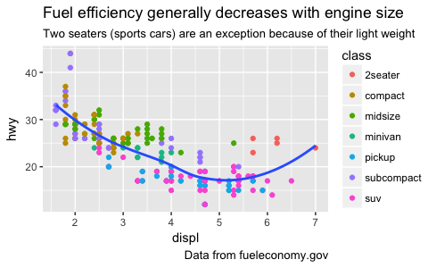
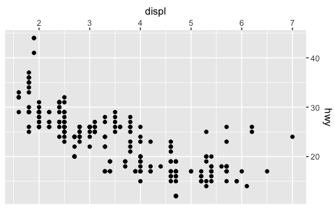
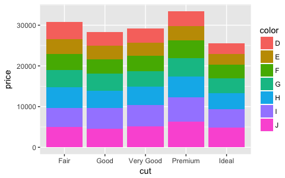
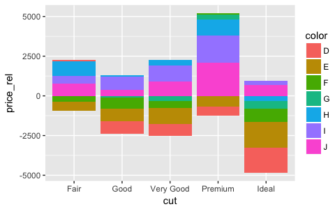

ggplot2 2.2.0
I’m planning to release ggplot2 2.2.0 in early November. In preparation, I’d like to announce that a release candidate is now available: version 2.1.0.9001. Please try it out, and file an issue on GitHub if you discover any problems. I hope we can find and fix any major issues before the official release.
Install the pre-release version with:
# install.packages("devtools")
devtools::install_github("tidyverse/ggplot2")If you discover a major bug that breaks your plots, please file a minimal reprex, and then roll back to the released version with:
install.packages("ggplot2")ggplot2 2.2.0 will be a relatively major release including:
- Subtitles and captions.
- A large rewrite of the facetting system.
- Improved theme options.
- Better stacking
- Numerous bug fixes and minor improvements.
The majority of this work was carried out by Thomas Pederson, who I was lucky to have as my “ggplot2 intern” this summer. Make sure to check out other visualisation packages: ggraph, ggforce, and tweenr.
Subtitles and captions
Thanks to Bob Rudis, you can now add subtitles and captions:
ggplot(mpg, aes(displ, hwy)) +
geom_point(aes(color = class)) +
geom_smooth(se = FALSE, method = "loess") +
labs(
title = "Fuel efficiency generally decreases with engine size",
subtitle = "Two seaters (sports cars) are an exception because of their light weight",
caption = "Data from fueleconomy.gov"
)
These are controlled by the theme settings plot.subtitle and plot.caption.
The plot title is now aligned to the left by default. To return to the previous centering, use theme(plot.title = element_text(hjust = 0.5)).
Facets
The facet and layout implementation has been moved to ggproto and received a large rewrite and refactoring. This will allow others to create their own facetting systems, as descrbied in the Extending ggplot2 vignette. Along with the rewrite a number of features and improvements has been added, most notably:
Functions in facetting formulas, thanks to Dan Ruderman.
ggplot(diamonds, aes(carat, price)) + geom_hex(bins = 20) + facet_wrap(~cut_number(depth, 6))
Axes were dropped when the panels in
facet_wrap()did not completely fill the rectangle. Now, an axis is drawn underneath the hanging panels:ggplot(mpg, aes(displ, hwy)) + geom_point() + facet_wrap(~class)
It is now possible to set the position of the axes through the
positionargument in the scale constructor:ggplot(mpg, aes(displ, hwy)) + geom_point() + scale_x_continuous(position = "top") + scale_y_continuous(position = "right")
You can display a secondary axis that is a one-to-one transformation of the primary axis with the
sec.axisargument:ggplot(mpg, aes(displ, hwy)) + geom_point() + scale_y_continuous( "mpg (US)", sec.axis = sec_axis(~ . * 1.20, name = "mpg (UK)") )
Strips can be placed on any side, and the placement with respect to axes can be controlled with the
strip.placementtheme option.ggplot(mpg, aes(displ, hwy)) + geom_point() + facet_wrap(~ drv, strip.position = "bottom") + theme( strip.placement = "outside", strip.background = element_blank(), strip.text = element_text(face = "bold") ) + xlab(NULL)
Theming
Blank elements can now be overridden again so you get the expected behavior when setting e.g.
axis.line.x.element_line()gets anarrowargument that lets you put arrows on axes.arrow <- arrow(length = unit(0.4, "cm"), type = "closed") ggplot(mpg, aes(displ, hwy)) + geom_point() + theme_minimal() + theme( axis.line = element_line(arrow = arrow) )
Control of legend styling has been improved. The whole legend area can be aligned according to the plot area and a box can be drawn around all legends:
ggplot(mpg, aes(displ, hwy, shape = drv, colour = fl)) + geom_point() + theme( legend.justification = "top", legend.box.margin = margin(3, 3, 3, 3, "mm"), legend.box.background = element_rect(colour = "grey50") )
panel.marginandlegend.marginhave been renamed topanel.spacingandlegend.spacingrespectively as this better indicates their roles. A newlegend.marginhas been actually controls the margin around each legend.When computing the height of titles ggplot2, now inclues the height of the descenders (i.e. the bits
gandythat hang underneath). This makes improves the margins around titles, particularly the y axis label. I have also very slightly increased the inner margins of axis titles, and removed the outer margins.The default themes has been tweaked by Jean-Olivier Irisson making them better match
theme_grey().Lastly, the
theme()function now has named arguments so autocomplete and documentation suggestions are vastly improved.
Stacking bars
position_stack() and position_fill() now stack values in the reverse order of the grouping, which makes the default stack order match the legend.
avg_price <- diamonds %>%
group_by(cut, color) %>%
summarise(price = mean(price)) %>%
ungroup() %>%
mutate(price_rel = price - mean(price))
ggplot(avg_price) +
geom_col(aes(x = cut, y = price, fill = color))
(Note also the new geom_col() which is short-hand for geom_bar(stat = "identity"), contributed by Bob Rudis.)
Additionally, you can now stack negative values:

The overall ordering cannot necessarily be matched in the presence of negative values, but the ordering on either side of the x-axis will match.
If you want to stack in the opposite order, try forcats::fct_rev():